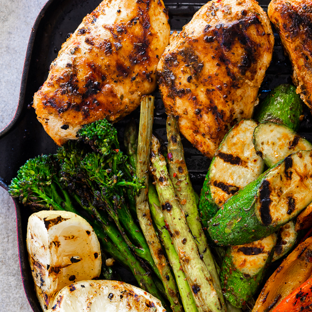

Grilled Chicken with Veggies

Ingredients:
For the marinade
- ¼ cup olive oil
- ¼ cup fresh lemon juice
- 4 garlic cloves crushed
- 1 tsp smoked paprika
- ½ tsp chilli flakes
- 1 tsp dried oregano
- 1 tsp salt
- black pepper to taste
For Grilling
- 4 large chicken breasts skinless + de-boned
- 2 bell peppers seeds removed and sliced into thick strips
- broccolini
- 12-16 spears asparagus woody ends trimmed
- 2-3 large zucchini/courgette sliced into thick slices
Instructions:
- Pre-heat the grill/griddle pan.
- Season the chicken with salt and allow to sit while you make the marinade.
- Combine all the marinade ingredients and mix well. Pour half of the marinade over the chicken and the other half over the vegetables. Allow to marinade for a few minutes.
- Grill the chicken for 5-7 minutes per side (depending on thickness) until cooked to your preference. Remove from the grill, cover with foil and allow to rest while you grill the vegetables.
- Grill the vegetables until they are starting to char and are cooked to your preference.
- Remove from the grill and serve with the chicken and lemon wedges for squeezing.